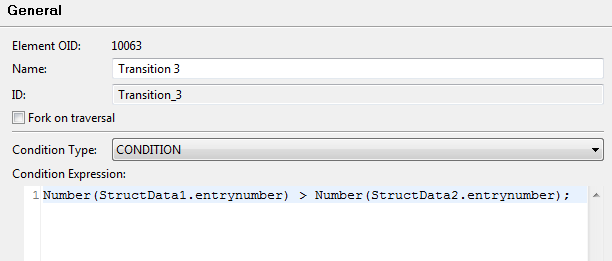

This chapter describes the specific data type for structured data.
To describe structured data - e.g. a person with a first name, a last name and an address, while the address has a street name, a number a city and a ZIP code -, a data technology using one of the other provided data types can be used. However all these technologies require additional programming skills in Java or XML.
Structured data types provide mechanisms to define and work with structured data without programming skills in Stardust.
Having defined such data types in the modeling environment of Stardust, these can be used for data definitions and Stardust will take care of their persistence in and their efficient retrieval from the Audit Trail database.
Please refer to chapters Structured Data Type of the Modeling Handbook and Working with Structured Types of the Business Process Modeling Handbook respectively for details on how to use this type in our provided modelers.
Some XSD types specified in structured data will be converted to JavaScript types when used for Message Transformation applications or in transition conditions. For Java representations like Map, List or Object, they have to be converted to Java types. The following table displays the mapping performed for the XSD types:
| XSD Type | Java type | JavaScript type |
|---|---|---|
| anySimpleType | java.lang.String | String |
| anyURI | java.lang.String | String |
| anyType | java.lang.String | String |
| base64Binary | java.lang.String | String |
| boolean | java.lang.Long | Number |
| byte | java.lang.Byte | Number |
| date | java.lang.Long | Number |
| dateTime | java.lang.Long | Number |
| decimal | java.lang.String | String |
| double | java.lang.Double | Number |
| duration | org.eclipse.stardust.common.Period | String |
| ENTITIES | java.lang.String | String |
| ENTITY | java.lang.String | String |
| float | java.lang.Float | Number |
| gDay | java.lang.String | String |
| gMonth | java.lang.String | String |
| gMonthDay | java.lang.String | String |
| gYear | java.lang.String | String |
| gYearMonth | java.lang.String | String |
| hexBinary | java.lang.String | String |
| ID | java.lang.String | String |
| IDREF | java.lang.String | String |
| IDREFS | java.lang.String | String |
| int | java.lang.Integer | Number |
| integer | java.lang.Integer | Number |
| language | java.lang.String | String |
| long | java.lang.Long | Number |
| Name | java.lang.String | String |
| NCName | java.lang.String | String |
| negativeInteger | java.lang.Integer | Number |
| NMTOKEN | java.lang.String | String |
| NMTOKENS | java.lang.String | String |
| nonNegativeInteger | java.lang.Integer | Number |
| nonPositiveInteger | java.lang.Integer | Number |
| normalizedString | java.lang.String | String |
| NOTATION | java.lang.String | String |
| positiveInteger | java.lang.Integer | Number |
| QName | java.lang.String | String |
| short | java.lang.Short | Number |
| string | java.lang.String | String |
| time | java.lang.Long | Number |
| token | java.lang.String | String |
| unsignedByte | java.lang.Byte | Number |
| unsignedInt | java.lang.Integer | Number |
| unsignedLong | java.lang.Long | Number |
| unsignedShort | java.lang.Short | Number |
If the actual type is not defined for any element or attribute,
the xsd:anyType is set as default type. The values for elements or attributes of
type xsd:anyType are persisted with the Java type String. If the value of an
xsd:anyType element is another element, the persisted value is the corresponding
xml fragment as String. For example:
<some_element>...content (can be mixed - complex element)...</some_element>
Serialization of a structured data containing xsd:anyType elements
via MessageSerializationApplication creates a valid xml with the xml
fragment correctly embedded in the document.
The Date xsd type may include a time zone component. If these kind of values are
converted to Java types, they are converted to a java.util.Calendar object having
the time component set to the beginning of the day (00:00:00,000) and a time zone equivalent to the
one specified by the xsd value.
This allows data mappings between primitive values of type Calendar and xsd Date values, with the
restriction that the Calendar primitive values must have the time
component set to 00:00:00,000. Attempts to map a Calendar primitive
value that has a non zero time component to an xsd Date will throw a conversion exception.
XSD:date fields are not localized, as the server time zone and client time zone may not match. If you map an XSD:date field and try to view it in the Stardust Portal, the date value is displayed irrespective of the client time zone. To view date and time, use the XSD:dateTime field instead.
Please note that decimal xsd types are mapped as String values and thus are compared like Strings in transition conditions. To avoid this, use a Number typecast, e.g.:
Number(StructData1.decimal) > Number(StructData2.decimal)

Structured data are stored in the TypeDeclarations section of an XPDL file according to the XPDL standard.
<xpdl:TypeDeclaration xmlns:xpdl="http://www.wfmc.org/2008/XPDL2.1" Id="Person" Name="Person">
<xpdl:ExtendedAttributes>
<xpdl:ExtendedAttribute Name="carnot:engine:visibility" Value="Public"/>
</xpdl:ExtendedAttributes>
<xpdl:SchemaType>
<xsd:schema xmlns:xsd="http://www.w3.org/2001/XMLSchema"
xmlns:add1="http://www.infinity.com/bpm/model/NewWorkflowModel/Address"
xmlns:per1="http://www.infinity.com/bpm/model/NewWorkflowModel/Person"
targetNamespace="http://www.infinity.com/bpm/model/NewWorkflowModel/Person">
<xsd:import namespace="http://www.infinity.com/bpm/model/NewWorkflowModel/Address"
schemaLocation="urn:internal:Address"/>
<xsd:complexType name="Person">
<xsd:sequence>
<xsd:element name="Firstname" type="xsd:string"/>
<xsd:element name="Lastname" type="xsd:string"/>
<xsd:element name="DateOfBirth" type="xsd:date"/>
<xsd:element name="Address" type="add1:Address"/>
<xsd:element name="ID" type="xsd:short"/>
</xsd:sequence>
</xsd:complexType>
<xsd:element name="Person" type="per1:Person"/>
</xsd:schema>
</xpdl:SchemaType>
</xpdl:TypeDeclaration>
Per default, a strict xpath validation will be performed on XSD schemas. To change the validation behavior, you can set the property XPath.StrictEvaluation in your carnot.properties file.
If this property is set to true, which is the default value, strict XPath evaluation will be performed. The following error is thrown in that case:
IllegalOperationException: MDL01123 - XPath 'FullName' is not defined.
If the property is set to false, a warning is logged. Dereferentiation paths on structured data are invoked, even if the XSD schema has changed, provided the path is still compatible with the new schema. Otherwise invocation fails.
In case a structured data is marked as volatile, the following extended attribute will be serialized into the XPDL:
<carnot:Attribute Name="carnot:engine:volatile" Value="true"/>
Global annotations are stored as XSD annotations in the following structure:
<xsd:schema xmlns:xsd=http://www.w3.org/2001/XMLSchema xmlns:infinity="...">
<xsd:element name="customer" type="Customer"> <xsd:annotation>
<xsd:complexType>
<xsd:sequence minOccurs="0">
<xsd:element name="someString" type="xsd:string" maxOccurs="unbounded">
<xsd:annotation>
<xsd:appinfo>
<infinity:storage>
<infinity:indexed>false</infinity:indexed>
<infinity:persistent>false</infinity:persistent>
</infinity:storage>
</xsd:appinfo>
</xsd:annotation>
</xsd:element>
</xsd:sequence>
</xsd:complexType>
</xsd:element>
</xsd:schema>
Other formats may specify how to store their annotations in a corresponding XSD structure in the implementation of the Message Format extension point. For example combining upcoming SWIFT standards and global annotations from the Process Workbench, an XSD representation of a data structure definition would look like:
<xs:annotation>
<xs:appinfo>
<info:FinFormat value="16c"/>
</xs:appinfo>
</xs:annotation>
<xsd:schema xmlns:xsd=http://www.w3.org/2001/XMLSchema xmlns:infinity="http://www.carnot.ag/xpdl/3.1">
<xsd:element name="customer" type="Customer">
<xsd:complexType>
<xsd:sequence minOccurs="0">
<xsd:element name="someString" type="xsd:string" maxOccurs="unbounded">
<xsd:annotation>
<xsd:appinfo>
<!--Stardust global annotations-->
<infinity:storage>
<infinity:indexed>false</infinity:indexed>
<infinity:persistent>false</infinity:persistent>
</infinity:storage>
</xsd:appinfo>
</xsd:annotation>
</xsd:element>
</xsd:sequence>
</xsd:complexType>
</xsd:element>
</xsd:schema>
Indexed fields store a separate copy of data that is used by the query API to perform filtering/sorting/grouping based on these fields. If the structure type element is marked as non-index (Index=False), then the data value row in database table does not get added.
The persistent property allows you to select which fields you want to store and which not. If Persistence is True then the data value persist in process instance event if it is not indexed in database. If False, data value does not persist with data.
Annotations and categories can be dynamically added to the modeling environment with an Eclipse extension point, which: